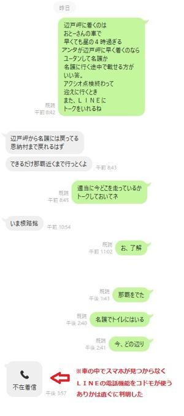
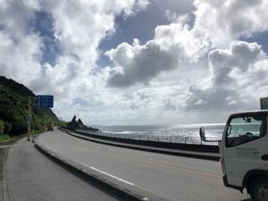
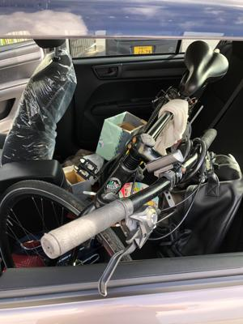
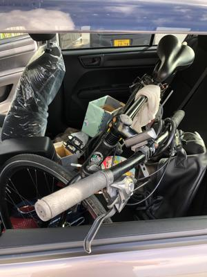
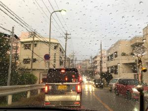

うるがいの話 ある日
最新: ツーリング【うるがいの話 ある日】とは 一日だけのプログです
『うるがいの話』の最新一日だけのプログで、通信料が少なく経済的だ。カニの画像をクリックすると全ての日付が載る『うるがいの話』サイトを表示します
|
|
【うるがいの話】 うるがい(ｳﾙｶﾞｲ urugai)とは、『もずくがに』の名前でとても大きくなります。 |
|---|---|
|
|
【カミマヤーの話】 猫のことを方言でマヤーといいます。カミマヤー（kamimayaa）とは、神の猫のことです。 |
|
【たながぁの音楽】 たながぁ（ﾀﾅｶﾞｰ tanagaa）とは手長えびのことで、何種類かあり大きいのは車 エビぐらいになります。 |

|
【ぶながぁの話】 ぶながぁ(ﾌﾞﾅｶﾞｰ bunagaa)とは、赤い髪の毛、赤い身体、そして身長は１ｍ２０ｃｍ ぐらい、川の蟹を食べているの目撃された。場所は沖縄県国頭郡大宜味村のと ある村僕の隣近所に住んでいる爺さんから、聞いた話です。 |
|
|
【ギーマの話】 ギーマ(giima)とは、山原の里山に咲くスズランに似た、 花を付けます。実は食べられます、 気が付くと口の周りが紫になっています。 |
2022年09月16日 (金）ツーリング
17:45

レンタル自転車を借りてコドモが、一泊二日で辺戸岬へ行った。昨日の８時過
ぎに電話で、辺戸岬に迎えに来て欲しいと言われる。いいけど、車の半年点検
が午後にあるから、それから辺戸岬に行くとしても午後の４時過ぎになるヨと
返答する。名護までは無理でも・・・、辺戸岬の直ぐ近く宇嘉という部落近く
でチンタラ自転車をこぐコドモを見かける、アヘーこれでは遅い筈と納得する
さて、自転車を車に載せようとしたが、トランクルームは話にならず、後部座
席に左側窓からハンドルを出しなんとか載せる。

 

迎えに来る途中、にわか雨に３度遭遇した。雨が降らないことを祈りながら運
転する。コドモを下し自宅に帰る途中、にわか雨に合う。

帰ると車の中でとんでもないシーリングの話を聞く、なんと一日目も無事に名
護着けず、夜７時半に名護にいる友達を呼び、車に自転車を積み込みホテルに
ついたの事。ついでになので、コドモに高校時代の彼女の実家や、生年月日が
一緒の女子高校生の実家（三年のとき仲のいい友達と集まって私達の誕生日会
をここ開いた）を紹介する。車が、大宜味村の喜如嘉部落に差し掛かると人間
国宝の平良敏子さんの法事案内が上げられていたのに気づいた。百歳の時、運
動会で走っていたよとコドモに伝えた。エリザベス女王も亡くなる２日前、イ
ギリスの首相任命をしていたスゴイ人達だ・・・・。このシーンって、私が高
校生の夏、父親と夜中のイセエビ漁の帰りに、辺戸岬からダットサンに載って
家に帰った日と似ている。
１７時３８分 ビットコインの総資産 ￥８、１６４↓